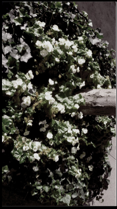

I saw these flowers in Lexington, and I adored them, although I have no idea what flowers they were, I think they were so pretty. I wanted to make the image black and white, but I felt that the flowers were hard to make out. So I played around with some adjustment layers and found a way to make the colors of the flowers slightly show, but still made the image have that black and white look I wanted to achieve in the beginning by dimming the saturation.
